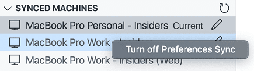

Settings Sync
Settings Sync lets you share your Visual Studio Code configurations such as settings, keybindings, and installed extensions across your machines so you are always working with your favorite setup.
Turning on Settings Sync
You can turn on Settings Sync using the Turn On Settings Sync... entry in the Manage gear menu at the bottom of the Activity Bar.

You will be asked to sign in and what preferences you would like to sync; currently Settings, Keyboard Shortcuts, Extensions, User Snippets, and UI State are supported.

Selecting the Sign in & Turn on button will ask you to choose between signing in with your Microsoft or GitHub account.

After making this selection, the browser will open so that you can sign in to your Microsoft or GitHub account. When a Microsoft account is chosen, you can use either personal accounts, such as Outlook accounts, or Azure accounts, and you can also link a GitHub account to a new or existing Microsoft account.
After signing in, Settings Sync will be turned on and continue to synchronize your preferences automatically in the background.
Merge or Replace
If you already synced from a machine and turning on sync from another machine, you will be shown with following Merge or Replace dialog.

- Merge: Selecting this option will merge local settings with remote settings from the cloud.
- Replace Local: Selecting this option will overwrite local settings with remote settings from the cloud.
- Merge Manually...: Selecting this option will open Merges view where you can merge preferences one by one.

Configuring synced data
Machine settings (with machine or machine-overridable scopes) are not synchronized by default, since their values are specific to a given machine. You can also add or remove settings you want to this list from the Settings editor or using the setting settingsSync.ignoredSettings.

Keyboard Shortcuts are synchronized per platform by default. If your keyboard shortcuts are platform-agnostic, you can synchronize them across platforms by disabling the setting settingsSync.keybindingsPerPlatform.
All built-in and installed extensions are synchronized along with their global enablement state. You can skip synchronizing an extension, either from the Extensions view (X (Windows, Linux Ctrl+Shift+X)) or using the setting settingsSync.ignoredExtensions.

Following UI State is synchronized currently:
- Display Language
- Activity Bar entries
- Panel entries
- Views layout and visibility
- Recently used commands
- Do not show again notifications
You can always change what is synced via the Settings Sync: Configure command or by opening the Manage gear menu, selecting Settings Sync is On, and then Settings Sync: Configure.
Conflicts
When synchronizing settings between multiple machines, there may occasionally be conflicts. Conflicts can happen when first setting up sync between machines or when settings change while a machine is offline. When conflicts occur, you will be presented with the following options:
- Accept Local: Selecting this option will overwrite remote settings in the cloud with your local settings.
- Accept Remote: Selecting this option will overwrite local settings with remote settings from the cloud.
- Show Conflicts: Selecting this will display a diff editor similar to the Source Control diff editor, where you can preview the local and remote settings and choose to either accept local or remote or manually resolve the changes in your local settings file and then accept the local file.
Switching Accounts
If at any time you want to sync your data to a different account, you can turn off and turn on Settings Sync again with different account.
Syncing Stable versus Insiders
By default, the VS Code Stable and Insiders builds use different Settings Sync services, and therefore do not share settings. You can sync your Insiders with Stable by selecting the Stable sync service while turning on Settings Sync. This option is only available in VS Code Insiders.

Note: Since Insiders builds are newer than Stable builds, syncing them can sometimes lead to data incompatibility. In such cases, Settings sync will be disabled automatically on stable to prevent data inconsistencies. Once newer version of Stable build is released, you can upgrade your stable client and turn on sync to continue syncing.
Restoring data
VS Code always stores local and remote backups of your preferences while syncing and provides views for accessing these. In case something goes wrong, you can restore your data from these views.

You can open these views using Settings Sync: Show Synced Data command from the Command Palette. The Local Sync activity view is hidden by default and you can enable it using Views submenu under Settings Sync view overflow actions.

Local backups folder in the disk can be accessed via the Settings Sync: Open Local Backups Folder command. The folder is organized by the type of preference and contains versions of your JSON files, named with a timestamp of when the backup occurred.
Note: Local backups are automatically deleted after 30 days. For remote backups the latest 20 versions of each individual resource (settings, extensions, etc.) is retained.
Synced Machines
VS Code keeps track of the machines synchronizing your preferences and provides a view to access them. Every machine is given a default name based on the type of VS Code (Insiders or Stable) and the platform it is on. You can always update the machine name using the edit action available on the machine entry in the view. You can also disable sync on another machine using Turn off Settings Sync context menu action on the machine entry in the view.

You can open this view using Settings Sync: Show Synced Data command from the Command Palette.
Extension authors
If you are an extension author, you should make sure your extension behaves appropriately when users enable Setting Sync. For example, you probably don't want your extension to display the same dismissed notifications or welcome pages on multiple machines.
Sync user global state between machines
If your extension needs to preserve some user state across different machines then provide the state to Settings Sync using vscode.ExtensionContext.globalState.setKeysForSync. Sharing state such as UI dismissed or viewed flags across machines can provide a better user experience.
There is an example of using setKeysforSync in the Extension Capabilities topic.
Reporting issues
Settings Sync activity can be monitored in the Log (Settings Sync) output view. If you experience a problem with Settings Sync, include this log when creating the issue. If your problem is related to authentication, also include the log from the Account output view.
How do I delete my data?
If you want to remove all your data from our servers, just turn off sync via Settings Sync is On menu available under Manage gear menu and select the checkbox to clear all cloud data. If you choose to re-enable sync, it will be as if you're signing in for the first time.
Next steps
- User and Workspace settings - Learn how to configure VS Code to your preferences through user and workspace settings.
Common questions
Is VS Code Settings Sync the same as the Settings Sync extension?
No, the Settings Sync extension by Shan Khan uses a private Gist on GitHub to share your VS Code settings across different machines and is unrelated to the VS Code Settings Sync.
What types of accounts can I use for Settings Sync sign in?
VS Code Settings Sync supports signing in with either a Microsoft account (for example Outlook or Azure accounts) or a GitHub account. Sign in with GitHub Enterprise accounts is not supported. Other authentication providers may be supported in the future and you can review the proposed Authentication Provider API in issue #88309.
Can I use a different backend or service for Settings Sync?
Settings Sync uses a dedicated service to store settings and coordinate updates. A service provider API may be exposed in the future to allow for custom Settings Sync backends.
Troubleshooting keychain issues
Settings Sync persists authentication information to the system keychain. Writing to the keychain can fail in some cases if the keychain is misconfigured.
Windows
If the keychain throws the error "Not enough memory resources are available to process this command", open the Credential Manager application, click on Windows Credentials and go through the list to see if there are some you can delete. This error was first reported in issue #130893 and happens when you have too many credentials in your Credential Manager.
If you're not sure what credentials to delete, try deleting all of the vscode specific credentials which all start with vscode. Here is a PowerShell one-liner that does exactly that:
cmdkey /list | Select-String -Pattern "LegacyGeneric:target=(vscode.+)" | ForEach-Object { cmdkey.exe /delete $_.Matches.Groups[1].Value }
For more troubleshooting steps, please refer to issue #130893.
macOS
If the keychain throws the error "The user name or passphrase you entered is not correct.", open the Keychain Access app, right-click on the login keychain, and lock and unlock it again. This error was first reported in issue #76 as a problem after upgrading to macOS High Sierra, but it has also been reported on more recent macOS versions.
Linux
If the keychain throws the error "No such interface "org.freedesktop.Secret.Collection" on object at path /org/freedesktop/secrets/collection/login", try following the steps described in issue #92972 to create a new keyring.
If the error is "Writing login information to the keychain failed with error 'Unknown or unsupported transport disabled for address disabled:'", check that dbus-launch has been started by adding export $(dbus-launch) in your init-script.
More info on issue #137850 & issue #120392.
If the error is "The name org.freedesktop.secrets was not provided by any .service files", make sure that you have a package that implements the Secret Storage API installed, such as gnome-keyring. VS Code expects such a package for storing credentials on the machine. More information can be found in issue #104319.
If the error is "Writing login information to the keychain failed with error 'Cannot create an item in a locked collection'.", you need to:
-
Add the following lines to your
~/.xinitrc:# see https://unix.stackexchange.com/a/295652/332452 source /etc/X11/xinit/xinitrc.d/50-systemd-user.sh # see https://wiki.archlinux.org/title/GNOME/Keyring#xinitrc eval $(/usr/bin/gnome-keyring-daemon --start) export SSH_AUTH_SOCK # see https://github.com/NixOS/nixpkgs/issues/14966#issuecomment-520083836 mkdir -p "$HOME"/.local/share/keyrings -
Login again.
-
Have the following programs installed (installation assumes arch/pacman, should be similar to other distros):
sudo pacman -S gnome-keyring libsecret libgnome-keyring -
Launch
seahorse, unlock the default password keyring or create a new one, and keep it unlocked. -
Restart the login procedure.
Can I share settings between VS Code Stable and Insiders?
Yes. Please refer to the Syncing Stable versus Insiders section for more information.
Please note that this can sometimes lead to data incompatibility because Insiders builds are newer than Stable builds. In such cases, Settings Sync will be disabled automatically on Stable to prevent data inconsistencies. Once a newer version of the Stable build is released, you can upgrade your client and turn on Settings Sync to continue syncing.